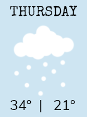
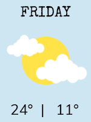
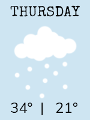
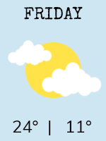

What a Week!
This weekend, more snow was dumped on our little town than we've seen in years! Overnight, our yard was transformed into a winter wonderland. The kids are having a heyday, building snowmen and throwing snowballs. It's still coming down, so I hope you've got your winter gear!
Word has it another big storm is just around the corner, so make sure you're all stocked up on the essentials. If you need to take a trip to the grocery store, be sure to reserve some extra time; grocery lines are extra long as shoppers prepare for the snow. However you prepare for the times ahead, stay warm and stay safe!
Speaking of storms, I'm reminded of the windstorm we had a few years back that knocked out ... continue to read full article